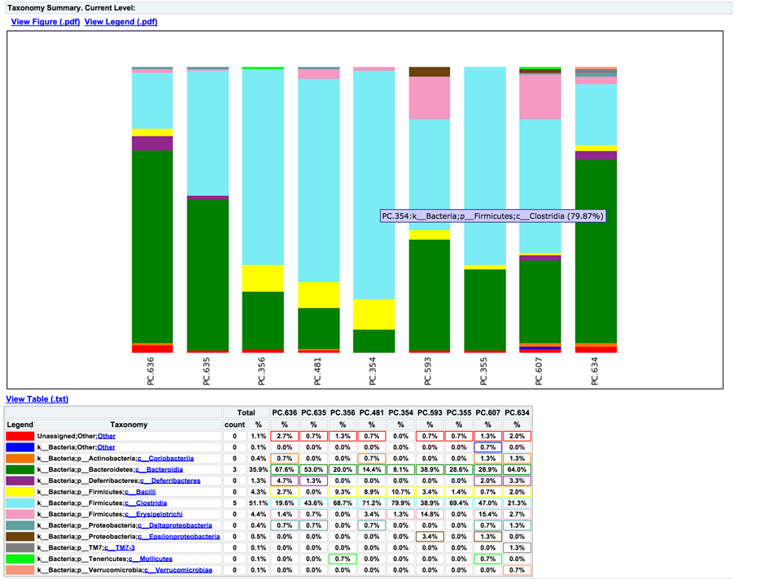
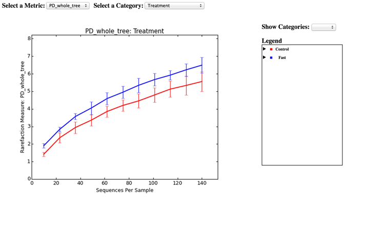
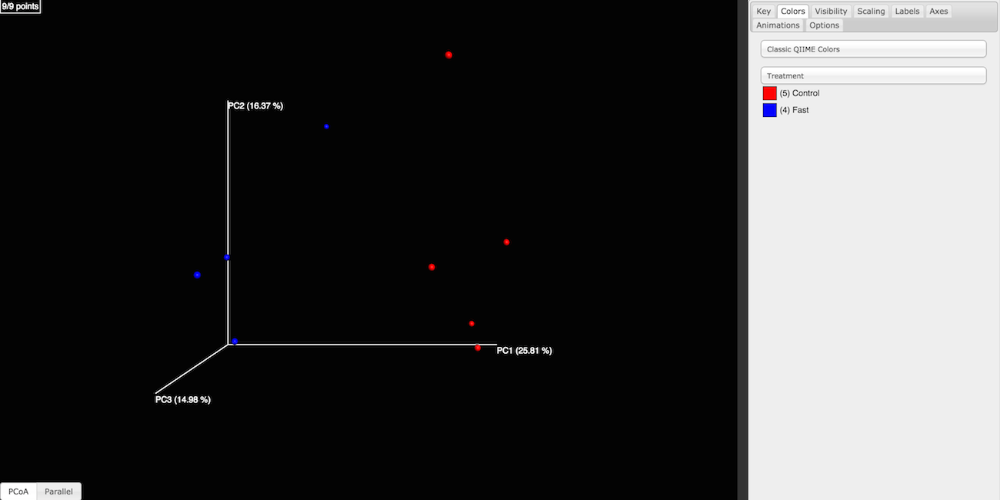
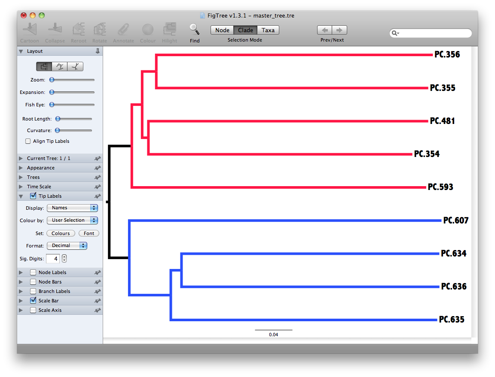

| News and Announcements » |
This tutorial explains how to apply de novo OTU picking and diversity analyses to 16S amplicon data using QIIME. We recommend first working through the QIIME Illumina Overview Tutorial, which covers many of these analysis steps at a higher level. This tutorial provides additional detail on the steps that are being performed by the QIIME workflows.
As an example, we will use data from a study of the response of mouse gut microbial communities to fasting (Crawford et al. (2009)). To make this tutorial run quickly on a personal computer, we will use a subset of the data generated from 5 animals kept on the control ad libitum fed diet, and 4 animals fasted for 24 hours before sacrifice. At the end of our tutorial, we will be able to compare the community structure of control vs. fasted animals. In particular, we will be able to compare taxonomic profiles for each sample type and perform alpha and beta diversity analyses to look for community-level differences in the samples.
If you need help while working through the tutorial, please visit http://help.qiime.org.
All the files you will need for this tutorial can be downloaded here. Descriptions of these files are below.
Open a terminal and use the cd command to move to the directory where you downloaded the tutorial data. Next, unzip the tutorial data and move into the unzipped directory that is created:
unzip qiime_overview_tutorial.zip
cd qiime_overview_tutorial
This is the 454-machine generated FASTA file. Using the Amplicon processing software on the 454 FLX standard, each region of the PTP plate will yield a fasta file of form 1.TCA.454Reads.fna, where “1” is replaced with the appropriate region number. For the purposes of this tutorial, we will use the fasta file Fasting_Example.fna.
This is the 454-machine generated quality score file, which contains a score for each base in each sequence included in the FASTA file. Like the fasta file mentioned above, the Amplicon processing software will generate one of these files for each region of the PTP plate, named 1.TCA.454Reads.qual, etc. For the purposes of this tutorial, we will use the quality scores file Fasting_Example.qual.
The mapping file is generated by the user. This file contains all of the information about the samples necessary to perform the data analysis. See here for more details about the mapping file format.
For the purposes of this tutorial, we will use the mapping file Fasting_Map.txt. The contents of the mapping file are shown here - as you can see, a nucleotide barcode sequence is provided for each of the 9 samples, as well as metadata related to treatment group and date of birth, and general run descriptions about the project:
#SampleID BarcodeSequence LinkerPrimerSequence Treatment DOB Description
#Example mapping file for the QIIME analysis package. These 9 samples are from a study of the effects of
#exercise and diet on mouse cardiac physiology (Crawford, et al, PNAS, 2009).
PC.354 AGCACGAGCCTA YATGCTGCCTCCCGTAGGAGT Control 20061218 Control_mouse__I.D._354
PC.355 AACTCGTCGATG YATGCTGCCTCCCGTAGGAGT Control 20061218 Control_mouse__I.D._355
PC.356 ACAGACCACTCA YATGCTGCCTCCCGTAGGAGT Control 20061126 Control_mouse__I.D._356
PC.481 ACCAGCGACTAG YATGCTGCCTCCCGTAGGAGT Control 20070314 Control_mouse__I.D._481
PC.593 AGCAGCACTTGT YATGCTGCCTCCCGTAGGAGT Control 20071210 Control_mouse__I.D._593
PC.607 AACTGTGCGTAC YATGCTGCCTCCCGTAGGAGT Fast 20071112 Fasting_mouse__I.D._607
PC.634 ACAGAGTCGGCT YATGCTGCCTCCCGTAGGAGT Fast 20080116 Fasting_mouse__I.D._634
PC.635 ACCGCAGAGTCA YATGCTGCCTCCCGTAGGAGT Fast 20080116 Fasting_mouse__I.D._635
PC.636 ACGGTGAGTGTC YATGCTGCCTCCCGTAGGAGT Fast 20080116 Fasting_mouse__I.D._636
First, you should ensure that your mapping file is formatted correctly with the validate_mapping_file.py script:
validate_mapping_file.py -m Fasting_Map.txt -o mapping_output
This script will print a message indicating whether or not problems were found in the mapping file. An HTML file showing the location of errors and warnings will be generated in the output directory, and a plain text log file will also be created. Errors will cause fatal problems with subsequent scripts and must be corrected before moving forward. Warnings will not cause fatal problems, but it is encouraged that you fix these problems as they are often indicative of typos in your mapping file, invalid characters, or other unintended errors that will impact downstream analysis. A file ending with _corrected.txt will also be created in the output directory, which will have a copy of the mapping file with invalid characters replaced by underscores.
Reverse primers can be specified in the mapping file, for removal during the demultiplexing step. This is not required, but it is strongly recommended, as leaving in sequences following primers, such as sequencing adapters, can interfere with OTU picking and taxonomic assignment.
For example, a mapping file with reverse primers specified in the ReversePrimer column might look like:
#SampleID BarcodeSequence LinkerPrimerSequence Treatment ReversePrimer Description
#Example mapping file for the QIIME analysis package. These 9 samples are from a study of the effects of
#exercise and diet on mouse cardiac physiology (Crawford, et al, PNAS, 2009).
PC.354 AGCACGAGCCTA YATGCTGCCTCCCGTAGGAGT Control GCGCACGGGTGAGTA Control_mouse__I.D._354
PC.355 AACTCGTCGATG YATGCTGCCTCCCGTAGGAGT Control GCGCACGGGTGAGTA Control_mouse__I.D._355
PC.356 ACAGACCACTCA YATGCTGCCTCCCGTAGGAGT Control GCGCACGGGTGAGTA Control_mouse__I.D._356
PC.481 ACCAGCGACTAG YATGCTGCCTCCCGTAGGAGT Control GCGCACGGGTGAGTA Control_mouse__I.D._481
PC.593 AGCAGCACTTGT YATGCTGCCTCCCGTAGGAGT Control GCGCACGGGTGAGTA Control_mouse__I.D._593
PC.607 AACTGTGCGTAC YATGCTGCCTCCCGTAGGAGT Fast GCGCACGGGTGAGTA Fasting_mouse__I.D._607
PC.634 ACAGAGTCGGCT YATGCTGCCTCCCGTAGGAGT Fast GCGCACGGGTGAGTA Fasting_mouse__I.D._634
PC.635 ACCGCAGAGTCA YATGCTGCCTCCCGTAGGAGT Fast GCGCACGGGTGAGTA Fasting_mouse__I.D._635
PC.636 ACGGTGAGTGTC YATGCTGCCTCCCGTAGGAGT Fast GCGCACGGGTGAGTA Fasting_mouse__I.D._636
The reverse primers, like the forward primers, are written in 5’->3’ direction. In this case, these are not the true reverse primers used, but rather just a somewhat conserved site in the sequences used for this example.
The primer construct and amplicon used in Crawford et al. (2009) is shown below, annotated using QIIME nomenclature:

454 sequencing, in most cases, generates sequences that begin at the BarcodeSequence, which is followed by the LinkerPrimerSequence, both of which are automatically removed during the demultiplexing step described below. The ReversePrimer (i.e., the primer at the end of the read) is not removed by default but can be using the -z option to split_libraries.py. The adapter sequence (Adapter B) is not a biological sequence, so must be removed if you suspect that it is contained within your reads. This can be achieved using the -z option to split_libraries.py.
The next task is to assign the multiplexed reads to samples based on their nucleotide barcode (this is known as demultiplexing). This step also performs quality filtering based on the characteristics of each sequence, removing any low quality or ambiguous reads. To perform these steps we’ll use split_libraries.py:
split_libraries.py -m Fasting_Map.txt -f Fasting_Example.fna -q Fasting_Example.qual -o split_library_output
This will create three files in the new directory split_library_output/:
A few lines from the seqs.fna file are shown below:
>PC.634_1 FLP3FBN01ELBSX orig_bc=ACAGAGTCGGCT new_bc=ACAGAGTCGGCT bc_diffs=0
CTGGGCCGTGTCTCAGTCCCAATGTGGCCGTTTACCCTCTCAGGCCGGCTACGCATCATCGCC....
>PC.634_2 FLP3FBN01EG8AX orig_bc=ACAGAGTCGGCT new_bc=ACAGAGTCGGCT bc_diffs=0
TTGGACCGTGTCTCAGTTCCAATGTGGGGGCCTTCCTCTCAGAACCCCTATCCATCGAAGGCTT....
>PC.354_3 FLP3FBN01EEWKD orig_bc=AGCACGAGCCTA new_bc=AGCACGAGCCTA bc_diffs=0
TTGGGCCGTGTCTCAGTCCCAATGTGGCCGATCAGTCTCTTAACTCGGCTATGCATCATTGCCTT....
>PC.481_4 FLP3FBN01DEHK3 orig_bc=ACCAGCGACTAG new_bc=ACCAGCGACTAG bc_diffs=0
CTGGGCCGTGTCTCAGTCCCAATGTGGCCGTTCAACCTCTCAGTCCGGCTACTGATCGTCGACT....
The first several lines of the split_library_log.txt file are shown below:
Number raw input seqs 1339
Length outside bounds of 200 and 1000 0
Num ambiguous bases exceeds limit of 6 0
Missing Qual Score 0
Mean qual score below minimum of 25 1
Max homopolymer run exceeds limit of 6 0
Num mismatches in primer exceeds limit of 0: 1
...
Reverse primer removal can be accomplished by adding the -z option. An example command using the mapping file with reverse primers described above:
split_libraries.py -m Fasting_Map_reverse_primers.txt -f Fasting_Example.fna -q Fasting_Example.qual -z truncate_only -o split_library_output_revprimers
If the number of sequences where the reverse primer is not identifiable is high, you should check the primer sequence to make sure it is in 5’->3’ orientation, or increase the number of mismatches allowed with --reverse_primer_mismatches.
Data that are already demultiplexed can have reverse primers removed using the standalone script truncate_reverse_primer.py.
Here we will be running the pick_de_novo_otus.py workflow, which runs a series of other scripts automatically. This workflow consists of the following steps:
Using the output from split_libraries.py (seqs.fna), run the following command:
pick_de_novo_otus.py -i split_library_output/seqs.fna -o otus
If you’re interested in denoising 454 data, refer to the denoising tutorial.
The results of pick_de_novo_otus.py are in otus/, and a description of the steps performed and the results follow:
At this step, all of the sequences from all of the samples will be clustered into Operational Taxonomic Units (OTUs) based on their sequence similarity. OTUs in QIIME are clusters of sequences, frequently intended to represent some degree of taxonomic relatedness. For example, when sequences are clustered at 97% sequence similarity, each resulting cluster is typically thought of as representing a species. This model and the current techniques for picking OTUs are known to be flawed, however, in that 97% OTUs do not match what humans have called species for many microbes. Determining exactly how OTUs should be defined, and what they represent, is an active area of research. See here for more information about OTU picking with QIIME.
Since each OTU may be made up of many related sequences, we will pick a representative sequence from each OTU for downstream analysis. This representative sequence will be used for taxonomic identification of the OTU and phylogenetic alignment. QIIME uses the OTU file created above and extracts a representative sequence from the fasta file by one of several methods.
In the otus/rep_set/ directory, QIIME has a fasta file seqs_rep_set.fasta containing one representative sequence for each OTU. In this fasta file, the sequence has been renamed with the OTU identifier, and the additional information on the header line reflects the sequence used as the representative:
>0 PC.636_424
CTGGGCCGTATCTCAGTCCCAATGTGGCCGGTCGACCTCTC....
>1 PC.481_321
TTGGGCCGTGTCTCAGTCCCAATGTGGCCGTCCGCCCTCTC....
Next, taxonomy will be assigned to each representative sequence. By default, QIIME uses the uclust consensus taxonomy classifier to attempt to assign taxonomy to each representative sequence resulting from step 2.
In the directory otus/uclust_assigned_taxonomy/, there will be a log file and a text file. The text file (which we refer to as an observation or OTU metadata file) contains a line for each OTU, followed by the taxonomic assignment, the fraction of uclust hits that contained this taxonomic assignment, and the number of uclust hits that were found. For some OTUs, the assignment may be as specific as a bacterial species, while others may not be assignable at all (and will therefore be labeled as Unassigned). Below are the first few lines of an observation metadata file containing the results of uclust taxonomic assignment:
denovo367 k__Bacteria; p__Bacteroidetes; c__Bacteroidia; o__Bacteroidales; f__S24-7; g__; s__ 1.00 3
denovo366 k__Bacteria; p__Firmicutes; c__Clostridia; o__Clostridiales; f__; g__; s__ 1.00 3
denovo365 k__Bacteria; p__Firmicutes; c__Erysipelotrichi; o__Erysipelotrichales; f__Erysipelotrichaceae; g__Allobaculum; s__ 1.00 3
denovo364 k__Bacteria; p__Firmicutes; c__Clostridia; o__Clostridiales; f__Lachnospiraceae 0.67 3
denovo281 Unassigned 1.00 1
Alignment of the OTU representative sequences and phylogeny inference is necessary only if phylogenetic metrics such as UniFrac will be subsequently invoked. Alignments can either be generated de novo using programs such as MUSCLE, or through alignment to an existing alignment with tools like PyNAST. For small studies such as this tutorial, either method is possible. However, for studies involving many sequences (roughly, more than 1000), de novo aligners are very slow and alignment with PyNAST is necessary. Since alignment is one of the most computationally intensive bottlenecks in the pipeline, large studies benefit greatly from parallelization of this task, which is possible with PyNAST.
After aligning the sequences, a log file and an alignment file are created in the directory otus/pynast_aligned_seqs/.
Before inferring a phylogenetic tree relating the sequences, it is beneficial to filter the sequence alignment to remove columns comprised of only gaps, and locations known to be excessively variable. QIIME uses a 16S alignment Lane mask (Lane, D.J. 1991) by default. After filtering, a filtered alignment file is created in the directory otus/pynast_aligned_seqs/.
The filtered alignment file produced in the directory otus/pynast_aligned_seqs/ is then used to build a phylogenetic tree using a tree-building program.
The Newick format tree file is written to rep_set.tre, which is located in the otus/ directory . This file can be viewed in tree visualization software, and is necessary for UniFrac diversity measurements and other phylogenetically-aware analyses (described below). The tree obtained can be visualized with programs such as FigTree, which was used to visualize the phylogenetic tree stored in rep_set.tre:

Using taxonomic assignments (step 3) and the OTU map (step 1) QIIME assembles a table of OTU abundances in each sample with taxonomic identifiers for each OTU.
The result of this step is otu_table.biom, which is located in the otus/ directory. For more information about the OTU table format, which is stored in the BIOM format, please see here.
To view summary statistics of the OTU table, run:
biom summarize-table -i otus/otu_table.biom
The summary shows that there are relatively few sequences in this tutorial example, but the sequences present are fairly evenly distributed among the 9 microbial communities:
Num samples: 9
Num observations: 419
Total count: 1337
Table density (fraction of non-zero values): 0.168
Counts/sample summary:
Min: 146.0
Max: 150.0
Median: 149.000
Mean: 148.556
Std. dev.: 1.257
Sample Metadata Categories:
Observation Metadata Categories: taxonomy
Counts/sample detail:
PC.481: 146.0
PC.355: 147.0
PC.636: 148.0
PC.607: 149.0
PC.635: 149.0
PC.593: 149.0
PC.354: 149.0
PC.634: 150.0
PC.356: 150.0
To create an OTU network, using the following command:
make_otu_network.py -m Fasting_Map.txt -i otus/otu_table.biom -o otus
To visualize the network, we use the Cytoscape program (which you can run by calling cytoscape from the command line – you may need to call this beginning either with a capital or lowercase ‘C’ depending on your version of Cytoscape), where each red circle represents a sample and each white square represents an OTU. The lines represent the OTUs present in a particular sample (blue for controls and green for fasting). For more information about opening the files in Cytoscape please refer to Making Cytoscape Networks.

You can group OTUs by different taxonomic levels (phylum, class, family, etc.) with the workflow script summarize_taxa_through_plots.py. Note that this process depends directly on the method used to assign taxonomic information to OTUS (see Assigning Taxonomy above):
summarize_taxa_through_plots.py -i otus/otu_table.biom -o taxa_summary -m Fasting_Map.txt
The script will generate new tables at various taxonomic levels (we’ll refer to these as taxonomy tables, which are different than OTU tables). For example, the class-level table is located at taxa_summary/otu_table_L3.txt. Each taxonomy table contains the relative abundances of taxa within each sample:
#OTU ID PC.636 PC.635 PC.356 PC.481 PC.354 PC.593 PC.355 PC.607 PC.634
Unassigned;Other;Other 0.027027027027 0.00671140939597 0.0133333333333 0.00684931506849 0.0 0.00671140939597 0.00680272108844 0.0134228187919 0.02
k__Bacteria;Other;Other 0.0 0.0 0.0 0.0 0.0 0.0 0.0 0.00671140939597 0.0
k__Bacteria;p__Actinobacteria;c__Coriobacteriia 0.00675675675676 0.0 0.0 0.00684931506849 0.0 0.0 0.0 0.0134228187919 0.0133333333333
k__Bacteria;p__Bacteroidetes;c__Bacteroidia 0.675675675676 0.530201342282 0.2 0.143835616438 0.0805369127517 0.389261744966 0.285714285714 0.288590604027 0.64
k__Bacteria;p__Deferribacteres;c__Deferribacteres 0.0472972972973 0.0134228187919 0.0 0.0 0.0 0.0 0.0 0.0201342281879 0.0333333333333
k__Bacteria;p__Firmicutes;c__Bacilli 0.027027027027 0.0 0.0933333333333 0.089041095890 0.107382550336 0.0335570469799 0.0136054421769 0.00671140939597 0.02
k__Bacteria;p__Firmicutes;c__Clostridia 0.195945945946 0.436241610738 0.686666666667 0.712328767123 0.798657718121 0.389261744966 0.69387755102 0.469798657718 0.213333333333
k__Bacteria;p__Firmicutes;c__Erysipelotrichi 0.0135135135135 0.00671140939597 0.0 0.0342465753425 0.0134228187919 0.147651006711 0.0 0.154362416107 0.0266666666667
To view the resulting charts, open the area or bar chart html file located in the taxa_summary/taxa_summary_plots folder. The following chart shows the taxonomic assignments for each sample as a bar chart. You can mouse-over the plot to see which taxa are contributing to the percentage shown:
QIIME supports generating heatmap images of BIOM tables (e.g., OTU tables or the taxonomy tables generated in the previous step) with make_otu_heatmap.py. Let’s create a heatmap illustrating class-level abundances on a per-sample basis, where samples are sorted by whether they are from control or fasted mice:
make_otu_heatmap.py -i taxa_summary/otu_table_L3.biom -o taxa_summary/otu_table_L3_heatmap.pdf -c Treatment -m Fasting_Map.txt
A PDF file is created as taxa_summary/otu_table_L3_heatmap.pdf. The first four samples are from fasted mice and the last five are from controls. This clearly illustrates class-level differences in the taxonomic composition of the samples:

Community ecologists are often interested in computing alpha (or the within-sample) diversity for samples or groups of samples in their study. Here, we will determine the level of alpha diversity in our samples using QIIME’s alpha_rarefaction.py workflow, which performs the following steps:
Although we could run this workflow with the (sensible) default parameters, this provides an opportunity to illustrate the use of custom parameters in a QIIME workflow. To see what measures of alpha diversity will be computed by default, run:
alpha_diversity.py -h
You should see, among other information:
-m METRICS, --metrics=METRICS
Alpha-diversity metric(s) to use. A comma-separated
list should be provided when multiple metrics are
specified. [default: PD_whole_tree,chao1,observed_otus]
which indicates that the metrics that will be used by default are PD_whole_tree, chao1, and observed_otus. If we additionally wanted to compute Shannon Index, we could create a parameters file (which for the sake of this example we’ll call alpha_params.txt) containing the following line:
alpha_diversity:metrics shannon,PD_whole_tree,chao1,observed_otus
For more information on creating parameters files, see here.
We can next run alpha_rarefaction.py, which requires the OTU table (-i) and phylogenetic tree (-t) from above, and the parameters file we just created:
alpha_rarefaction.py -i otus/otu_table.biom -m Fasting_Map.txt -o arare -p alpha_params.txt -t otus/rep_set.tre
Descriptions of the steps involved in alpha_rarefaction.py follow:
The directory arare/rarefaction/ will contain many text files named rarefaction_##_#.txt; the first set of numbers represents the number of sequences sampled, and the last number represents the iteration number. If you opened one of these files, you would find an OTU table where for each sample the sum of the counts equals the number of samples taken.
To keep the results of alpha_rarefaction.py to a manageable size, these results are deleted unless you pass the --retain_intermediate_files option to alpha_rarefaction.py.
The rarefied tables are the basis for calculating alpha diversity metrics, which describe the richness and/or evenness of taxa in a single sample. QIIME allows users to calculate more than two dozen different diversity metrics. The full list of available metrics is available here. Each metric has different strengths and limitations. Technical discussion of each metric is readily available online and in ecology textbooks, but it is beyond the scope of this tutorial. By default, QIIME calculates three metrics: Chao1 (chao1), Observed OTUs (observed_otus, previously known as Observed Species), and Phylogenetic Diversity (PD_whole_tree). In addition, in the alpha_params.txt file we added the Shannon Index (shannon) to the list of alpha diversity measures that we calculated here.
The result of this step produces text files with the results of the alpha diversity computations performed on the rarefied OTU tables. The results are located in the arare/alpha_div/ directory.
To keep the results of alpha_rarefaction.py to a manageable size, these results are deleted unless you pass the --retain_intermediate_files option to alpha_rarefaction.py.
The output directory arare/alpha_div/ will contain one text file alpha_rarefaction_##_# for every file input from arare/rarefaction/, where the numbers represent the number of samples and iterations as before. The content of this tab delimited file is the calculated metrics for each sample. To collapse the individual files into a single combined table, the workflow uses collate_alpha.py.
In the output directory arare/alpha_div_collated/, there will be one file for every alpha diversity metric used. Each file will contain the alpha diversity measure for every sample, arranged in ascending order from lowest number of sequences per sample to highest. A portion of the observed_otus.txt file are shown below:
sequences per sample iteration PC.636 PC.635 PC.356 PC.481 PC.354 PC.593 PC.355 PC.607 PC.634
alpha_rarefaction_10_0.txt 10 0 7.0 10.0 6.0 8.0 9.0 9.0 7.0 9.0 10.0
alpha_rarefaction_10_1.txt 10 1 8.0 9.0 10.0 8.0 9.0 6.0 8.0 10.0 9.0
alpha_rarefaction_10_2.txt 10 2 8.0 10.0 9.0 10.0 8.0 8.0 9.0 10.0 7.0
alpha_rarefaction_10_3.txt 10 3 8.0 9.0 7.0 10.0 6.0 9.0 7.0 10.0 7.0
alpha_rarefaction_10_4.txt 10 4 8.0 9.0 8.0 7.0 8.0 10.0 9.0 9.0 9.0
QIIME creates plots of alpha diversity vs. simulated sequencing effort, known as rarefaction plots, using the script make_rarefaction_plots.py. This script takes a mapping file and any number of files generated by collate_alpha.py, and creates alpha rarefaction curves. Each curve represents a sample and can be grouped by the sample metadata supplied in the mapping file.
This step generates a arare/alpha_rarefaction_plots/rarefaction_plots.html file that can be opened with a web browser, in addition to other files. The arare/alpha_rarefaction_plots/average_plots/ folder contains the average plots for each metric and category.
The arare/alpha_rarefaction_plots/average_tables/ folder contains the diversity measure averages for each rarefied table, so the user can optionally plot the rarefaction curves in another application. To keep the results of make_rarefaction_plots.py to a manageable size, these results are not generated unless you pass the --generate_average_tables option to make_rarefaction_plots.py.
To view the alpha rarefaction plots, open the file arare/alpha_rarefaction_plots/rarefaction_plots.html. Once the browser window is open, select the metric PD_whole_tree and the category Treatment, to reveal a plot like the figure below. You can click on the triangle next to each label in the legend to see all the samples that contribute to that category. Below each plot is a table displaying average values for each measure of alpha diversity for each group of samples in the specified category.
In addition to alpha (or within-sample) diversity, community ecologists are often interested in computing beta (or the between-sample) diversity between all pairs of samples in their study.
Beta diversity represents the explicit comparison of microbial (or other) communities based on their composition. Beta diversity metrics thus assess the differences between microbial communities. The fundamental output of these comparisons is a square, hollow matrix where a “distance” or dissimilarity is calculated between every pair of community samples, reflecting the dissimilarity between those samples. The data in this distance matrix can be visualized with analyses such as Principal Coordinates Analysis (PCoA) and hierarchical clustering.
Like alpha diversity, there are many possible beta diversity metrics that can be calculated with QIIME. The full list of metrics can be viewed by running:
beta_diversity.py -s
Here, we will calculate beta diversity between our 9 microbial communities using the default beta diversity metrics of weighted and unweighted UniFrac, which are phylogenetic measures used extensively in recent microbial community sequencing projects. To perform this analysis, we will use the beta_diversity_through_plots.py workflow, which performs the following steps:
We can run the beta_diversity_through_plots.py workflow with the following command, which requires the OTU table (-i) and tree file (-t) from above, the metadata mapping file (-m), and the number of sequences per sample (-e, even sampling depth):
beta_diversity_through_plots.py -i otus/otu_table.biom -m Fasting_Map.txt -o bdiv_even146 -t otus/rep_set.tre -e 146
Descriptions of the steps involved in beta_diversity_through_plots.py follow:
To remove sampling depth heterogeneity, we can perform rarefaction on our OTU table. Rarefaction is an ecological approach that allows users to standardize the data obtained from samples with different sequencing efforts, and to compare the OTU richness of the samples using these standardized data. For instance, if one of your samples yielded 10,000 sequences, and another yielded only 1,000 sequences, the species diversity within those samples may be much more influenced by sequencing effort than the underlying biology. We use rarefaction to randomly subsample the same number of sequences from each sample in order to compare the communities at a given level of sampling effort (an even sampling depth).
See the biom summarize-table section above for the number of sequences in each of the 9 communities.
Since all samples have at least 146 sequences, a rarefaction level of 146 (specified by -e 146 above) allows us to compare all 9 samples at equal sequencing depth. Any samples containing fewer than 146 sequences would have been removed from these beta diversity analyses.
Beta diversity metrics assess the differences between microbial communities. By default, QIIME calculates both weighted and unweighted UniFrac, which are phylogenetically-aware measures of beta diversity.
The resulting distance matrices (bdiv_even146/unweighted_unifrac_dm.txt and bdiv_even146/weighted_unifrac_dm.txt) are the basis for further analyses and visualizations (e.g., Principal Coordinates Analysis and hierarchical clustering).
Principal Coordinates Analysis (PCoA) is a technique that helps to extract and visualize a few highly-informative components of variation from complex, multidimensional data. This is a transformation that maps the samples present in the distance matrix to a new set of orthogonal axes such that a maximum amount of variation is explained by the first principal coordinate, the second largest amount of variation is explained by the second principal coordinate, etc. The principal coordinates can be plotted in two or three dimensions to provide an intuitive visualization of differences between samples. For more information on PCoA and other ordination techniques, see here.
The files bdiv_even146/unweighted_unifrac_pc.txt and bdiv_even146/weighted_unifrac_pc.txt contain the results of PCoA applied to the unweighed and weighted UniFrac distance matrices, respectively.
Emperor allows for the visualization of PCoA plots in three dimensions. HTML files are created in bdiv_even146/unweighted_unifrac_emperor_pcoa_plot and bdiv_even146/weighted_unifrac_emperor_pcoa_plot directories. For the Treatment column in the mapping file, all samples with the same treatment (control or fasted) will get the same color. By default, the five control samples are colored red and the four fasted samples are colored blue (colors, and many other plot settings, can be customized in Emperor). This allows you to easily visualize “clustering” by metadata category. The 3-D visualization software allows you to rotate the axes to see the data from different perspectives. By default, Emperor will plot the first three principal coordinates. Other combinations can be viewed using the “Axes” option in Emperor. All 8 components can be viewed using the left bottom menu “Parallel” using a parallel coordinates plot.
The jackknifed_beta_diversity.py workflow uses jackknife replicates to estimate the uncertainty in PCoA plots and hierarchical clustering of microbial communities. Many of the same concepts relevant to beta diversity and PCoA are used here. jackknifed_beta_diversity.py performs the following steps:
We can run the workflow with the following command:
jackknifed_beta_diversity.py -i otus/otu_table.biom -t otus/rep_set.tre -m Fasting_Map.txt -o jack -e 110
Descriptions of the steps involved in jackknifed_beta_diversity.py follow:
Unweighted Pair Group Method with Arithmetic mean (UPGMA) is a type of hierarchical clustering method that uses average linkage. It can be used to interpret the distance matrix produced by beta_diversity.py.
The output can be opened with tree viewing software, such as FigTree:
This tree shows the relationship among the 9 samples, and reveals that the 4 samples from the guts of fasted mice cluster together (PC.6xx, fasting data is in Fasting_Map.txt). The UPGMA trees resulting from this step should not be interpreted directly. Rather, they are only used in step 6 if the user passed --master_tree full. The default (--master_tree consensus) will result in a more biologically meaningful result, so these are provided only as a legacy option.
To measure the robustness of our results to sequencing depth, we perform a jackknifing analysis, wherein a smaller number of sequences are chosen at random from each sample, and the resulting UPGMA tree from this subset of data is compared with the tree representing the entire data set. This process is repeated with many random subsets of data, and the tree nodes which prove more consistent across jackknifed datasets are deemed more robust.
First, the jackknifed OTU tables must be generated by subsampling the full data set. In this tutorial, each sample contains between 146 and 150 sequences, as shown with biom summarize-table.
To ensure that a random subset of sequences is selected from each sample, we chose to select 110 sequences from each sample (75% of the smallest sample, though this value is only a guideline), which is designated by the -e option when running the workflow (see above).
More jackknife replicates provide a better estimate of the variability expected in beta diversity results, but at the cost of longer computational time. By default, QIIME generates 10 jackknife replicates of the available data. Each replicate is a simulation of a smaller sequencing effort (110 sequences in each sample, as defined above).
The workflow then computes a distance matrix for each jackknifed dataset, which results in 10 distance matrix files written to the jack/unweighted_unifrac/rare_dm/ directory and 10 distance matrices written to the jack/weighted_unifrac/rare_dm/ directory. Each set of 10 distance matrices is then used as input to hierarchical clustering with UPGMA, with the output written to the jack/unweighted_unifrac/rare_upgma/ and jack/weighted_unifrac/rare_upgma/ directories.
UPGMA clustering of the 10 distance matrices results in 10 hierarchical clusterings (or UPGMA trees) of the 9 mouse microbial communities, with each UPGMA tree being based on a random subsample of the available sequence data.
This step of the workflow compares each UPGMA tree to a consensus of those trees. Three files are written to jack/unweighted_unifrac/upgma_cmp/ and jack/weighted_unifrac/upgma_cmp/:
- master_tree.tre, which is identical to jackknife_named_nodes.tre but each internal node of the UPGMA clustering is assigned a unique name
- jackknife_named_nodes.tre
- jackknife_support.txt explains how frequently a given internal node had the same set of descendant samples in the jackknifed UPGMA clusters as it does in the UPGMA cluster using the full data set. A value of 0.5 indicates that half of the jackknifed data sets support that node, while 1.0 indicates perfect support.
The jackknifed replicate PCoA plots can be compared to assess the degree of variation from one replicate to the next. Emperor displays this variation by displaying confidence ellipsoids around the samples represented in a PCoA plot. The resulting plots are in jack/unweighted_unifrac/emperor_pcoa_plots and jack/weighted_unifrac/emperor_pcoa_plots:

jackknife_named_nodes.tre can be viewed with FigTree or another tree-viewing program. However, as an example, we can visualize the bootstrapped tree using QIIME’s make_bootstrapped_tree.py, as follows:
make_bootstrapped_tree.py -m jack/unweighted_unifrac/upgma_cmp/master_tree.tre -s jack/unweighted_unifrac/upgma_cmp/jackknife_support.txt -o jack/unweighted_unifrac/upgma_cmp/jackknife_named_nodes.pdf
The resulting PDF shows the tree with internal nodes colored, red for 75-100% support, yellow for 50-75%, green for 25-50%, and blue for < 25% support. Although UPGMA shows that PC.354 and PC.593 cluster together and PC.481 and PC.6xx cluster together, we cannot have high confidence in this result. However, there is excellent jackknife support for all fasted samples (PC.6xx) clustering separate from the non-fasted samples.

We can add taxa from the taxonomy tables in the taxa_summary/ directory to a 3-D PCoA plot using Emperor’s make_emperor.py. The coordinates of a given taxon are plotted as a weighted average of the coordinates of all samples, where the weights are the relative abundances of the taxon in the samples. The size of the sphere representing a taxon is proportional to the mean relative abundance of the taxon across all samples. The following command creates a biplot displaying the 5 most abundant class-level taxa:
make_emperor.py -i bdiv_even146/unweighted_unifrac_pc.txt -m Fasting_Map.txt -t taxa_summary/otu_table_L3.txt --n_taxa_to_keep 5 -o biplots
The resulting html file biplots/index.html shows a biplot similar to this:


{kind=link}
{kind=link}